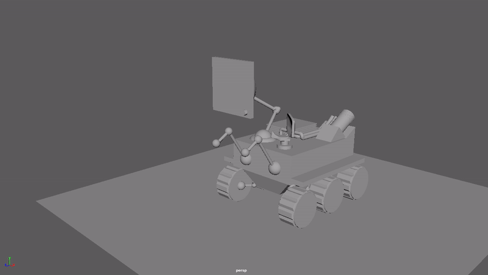
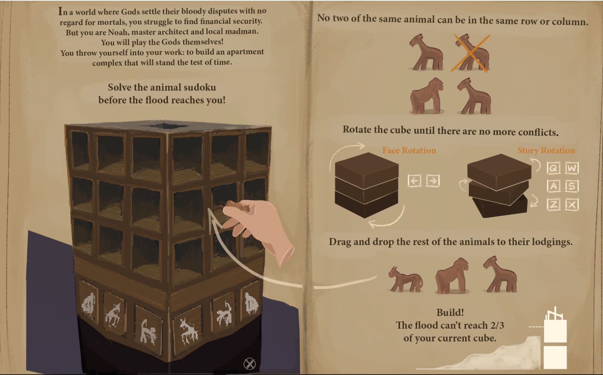
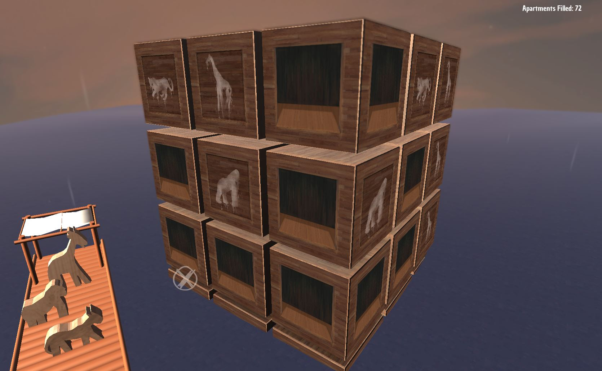

My interests stem from a broad range of subjects. From webdesign and game design to programming and the arts, I find myself wanting to create products for people to consume. Be it entertainment, experiences, or something that makes life easier, I like to see my work be used by others.
This website is an example of a project I wanted to devote myself to, as I built it from scratch. Below, you can see a few more highlighted projects of mine that reflect what I wish to do professionally. If you have any questions about the projects, please feel free to contact me
Newline
Star Wars Booth 2017
Newline
What is booth?
Booth is an experience wholly unique to Carnegie Mellon University, not necessarily in concept, but in scale. Many organizations on campus create interactive buildings to engage with the student body, but also the surrounding community in the Pittsburgh area.
When describing the experience to someone, I like to describe each booth as being reminiscent of a line in a very emmersive theme park. In those parks, each line tells a story to the riders as they wait for the ride. They have interactivity and also pertain thematically to the ride itself.
I was one of two leaders of Sigma Phi Epsilon's booth. Our organization's booth was Star Wars themed. We (my co-leader and the architect of the booth) decided on making the whole experience feel as if a viewer was living The Force Awakens through Finn's (FN-2187 - the disgraced former stormtrooper's) eyes. If you would like to read more about it, click here.
Newline

Spring Cleaning VR
Newline
VR Development
Spring Cleaning is a brief VR game that I made with Unity in a team of 6. We were given 6 weeks to create a game that added a twist to recreational lawn games. Our team chose to modify croquet. The game demos the different type of puzzles you can create when you push croquet to 3 Dimensions instead of one plane.
Newline
In Spring Cleaning, the player assumes the role of a newly hired sanitation employee on a space ship. The player must hit balls of trash through their respective recepticles to clean the ship. The game demos gravity puzzles, vacuum puzzles, and includes haptic feedback for the player with intuitive hitting mechanics. Our team was lauded for having a very immersive environment and intuitive controls.
I created many of the 3D models that can be seen in the game. I programmed the majority of the user interaction, and I also animated the helper bot that we included to give the user a sense of scale. If you would like to read more about the project (and what I did), you can see more here, or you can visit its GitHub page.
Newline

Noah's Tower
Newline
A reimagining of Sudoku
A similar prompt to Spring Cleaning, the idea of Noah's Tower was to reimagine Sudoku. Since the lead programmer and I were really into the idea of programming for a 3D environment, our team chose to reimagine sudoku onto 4 sides of a cube.
Newline

The infographic on the instruction menu explains how we re-wrote the rules of sudoku to fit a 3D Noah's Ark theme.
Newline
In a team of 5, we created this in 3 weeks. We had feedback each week and were able to improve on our design. We learned a lot about feedback and how to improve the user interface. As well as playing the role of producer and presenter for the team, I also modeled the raft, simulated cloth physics on the raft's transom, as well as the rising wave mechanic that leads to the loss-state of the game. If you would like to learn more about the game's process - and my inclusion in it - you can visit the GitHub page or read more about it here.